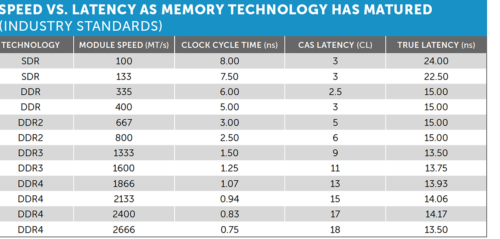
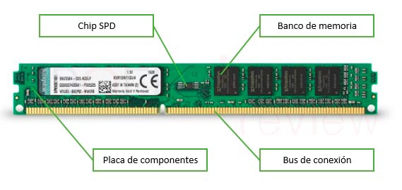
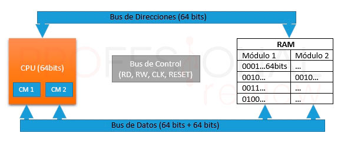

Para que sirve
En la memoria RAM se almacenan todos los datos e instrucciones de los programas que se están ejecutando, estas
son enviadas desde las unidades de almacenamiento antes de su ejecución.
Si la memoria RAM no existiera las instrucciones deberían de ser tomadas directamente de los discos duros y
estos son mucho más lentos que esta memoria de acceso aleatorio, por lo que es un componente crítico en el
rendimiento de un ordenador.
Se llama memoria de acceso aleatorio porque se puede leer y escribir en cualquiera de sus posiciones de memoria
sin necesidad de respetar un orden secuencial para su acceso.
Funcionamiento
Existen tres tipos de señales que el controlador de memoria RAM debe gestionar, señales de datos, señales de direccionamiento y señales de control.
- En el bus de direcciones se indica la dirección de la celda sobre la que se va a trabajar.
- Por el bus de datos discurren los datos que se van a leer o escribir
- El bus de control indica que tipo de operación se está realizando.
Caracteristicas de las memorias
Las memorias se caracterizan por las siguientes propiedades:
- Capacidad. Cuanta información pueden almacenar
- Latencia. Tiempo que transcurre entre que se solicita un dato y el dato se encuentra disponible.
- Frecuencia. Frecuencia en Hercios (Hz) mide el número de veces que se repite un ciclo cada segundo, por lo que cuanto mayor sea la frecuencia, menos tiempo se tardará en realizar un ciclo.
- Voltaje. Tensión que necesita para funcionar correctamente.
- Ancho de banda . Cantidad de información que transmite por segundo
Hay varios tipos de la latencia, pero lo que se suele indicar es la CAS ( CL ), como se ve en la siguiente imagen: En la siguiente tabla podemos observar el valor de la latencia real en función del tiempo de ciclo de reloj y la latencia CAS 
Componentes

- Placa
Es la estructura que soporta los demás componentes y las pistas eléctricas que comunican cada una de las partes de estas. Cada una de estas placas forman un módulo de memoria RAM. - Bancos de memoria
Son los componentes físicos encargados de almacenar los registros. Estos bancos de memoria lo forman chips de circuitos integrados que están compuestos en su interior por transistores y capacitores que forman celdas de almacenamiento. Estos elementos permiten almacenar bits de información dentro de ellos. Para que la información permanezca dentro de los transistores será necesaria una alimentación eléctrica periódica en ellos. Es por esto que cuando apagamos nuestro ordenador esta memoria queda completamente vacía. - Chip SPD
El chip SPD (Serial Presence Detect) es el encargado de almacenar datos relativos al módulo de memoria RAM. Estos datos son el tamaño de la memoria, el tiempo de acceso, velocidad y el tipo de memoria. De esta forma el ordenador conocerá que memoria RAM tiene instalada en su interior al chequear esta durante el encendido. - Bus de conexión
Este bus compuesto por contactos eléctricos y es el encargado de permitir la comunicación entre el módulo de memoria y la placa base. Gracias a este elemento dispondremos de módulos de memoria separados de la placa base pudiendo con ello ampliar la capacidad de memoria mediante modulo nuevos
Dual Channel
La tecnología de doble canal permite un incremento de rendimiento del equipo gracias a que será posible el acceso simultáneo a dos módulos distintos de memoria. Cuando está activa la configuración de dual channel será posible acceder a bloques de una extensión de 128 bits en lugar de los 64 típicos 
Para conseguir implementar esta tecnología, será necesario un controlador de memoria adicional situado en el chipset del puente norte de la placa base. Para que un doble canal sea efectivo, los módulos de memoria deben ser del mismo tipo, tener la misma capacidad y velocidad. Y deberá estar instalados en los slots indicados en la placa base (normalmente son los pares 1-3 y 2-4)